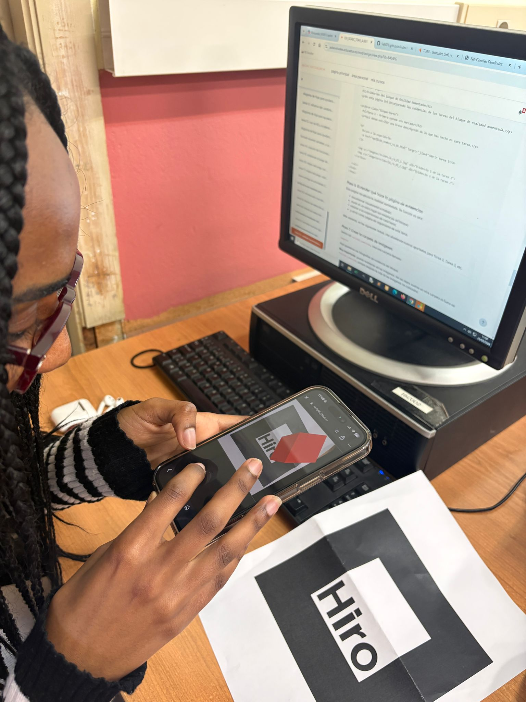
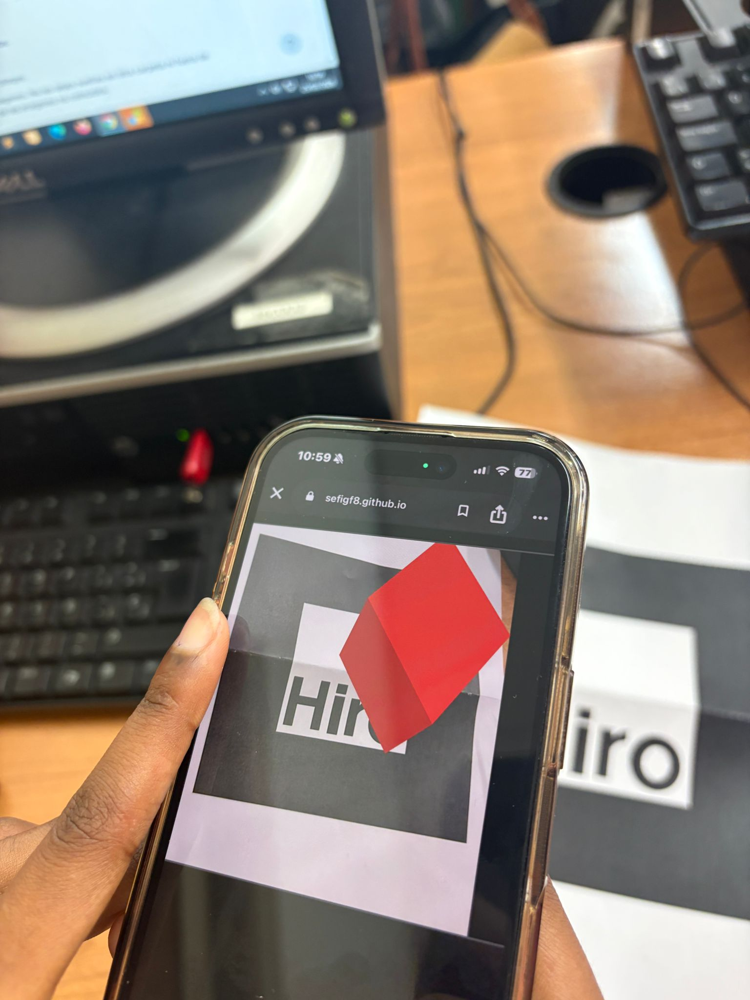
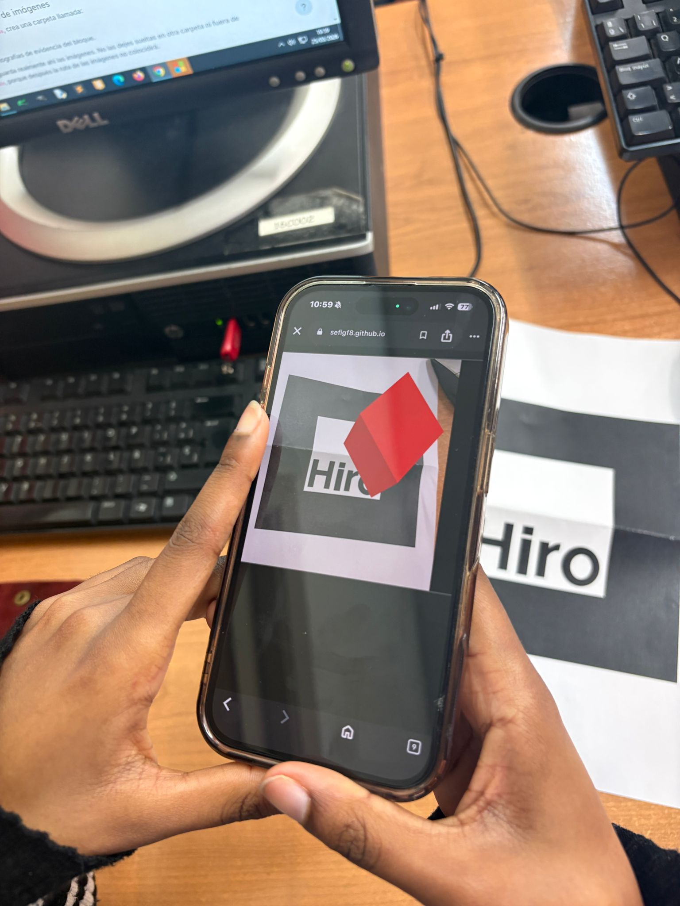

En esta página se recogen las evidencias de las tareas realizadas en el bloque de realidad aumentada.
En esta tarea se ha creado una experiencia de realidad aumentada utilizando un marcador. Al enfocar el marcador con la cámara del dispositivo, aparece un objeto 3D sobre la imagen.


